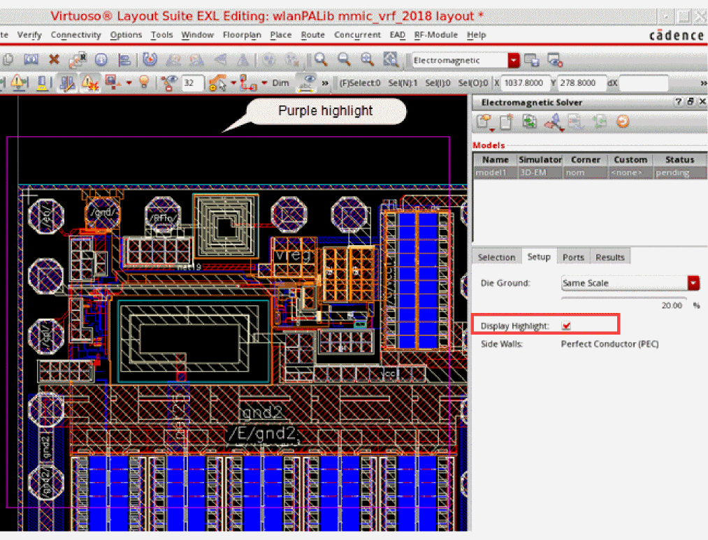
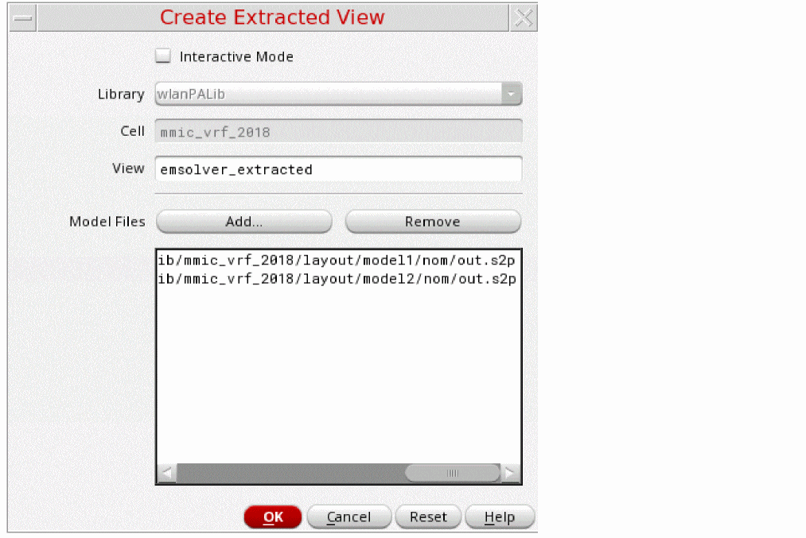
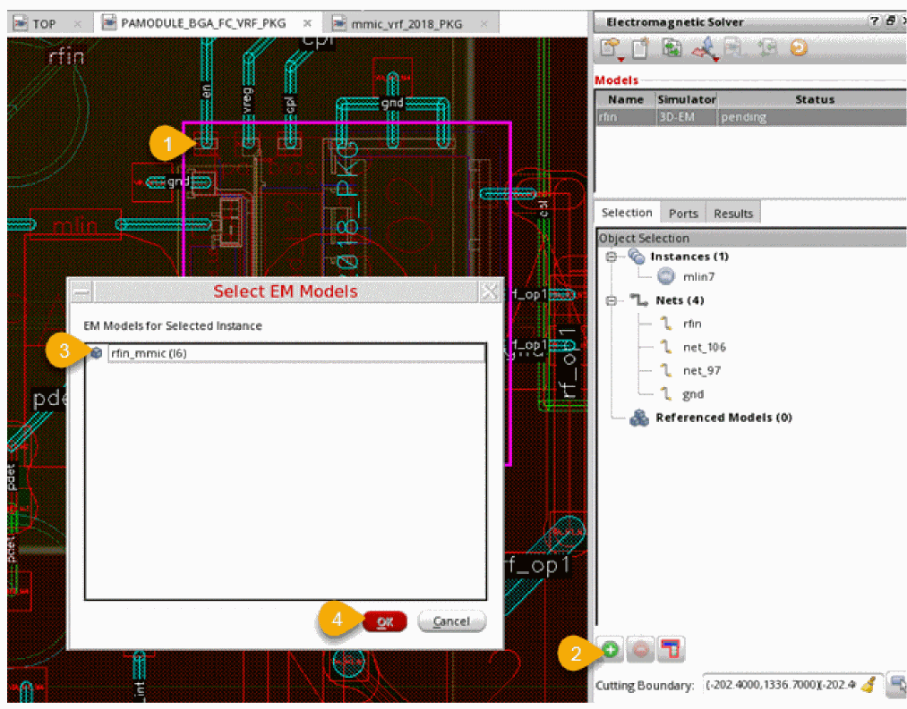

1
Introduction to the Electromagnetic Solver Assistant
After a fully functional layout view of a chip, package or PCB design is ready, it is important to resimulate the design to see the effect of the devices added while preparing the layout. For a Virtuoso RF design, it means running a simulation to study the RF behavior of the passive devices, such as Pcells, inductors, baluns, transformers, MiM/MoM capacitors and interconnects, that are added to the layout view. Simulators, such as Spectre, require physical model or 3D models to run simulation for such devices. The Electromagnetic Solver assistant in Virtuoso Layout EXL provides an interface to create 3D models for such devices by running the S-Parameter (Scattering Parameters) extraction. These S-Parameters describe the electrical behavior of the linear electrical networks in the design.
For the purpose of running extraction, the Electromagnetic Solver assistant is integrated with three extraction engines, Clarity, Sigrity 3D-EM and AXIEM. Depending on the your design and the accuracy requirements, you can choose an engine to run extraction and generate 3D models that are saved in touchstone files. Next, you can backannotate these S-parameter 3D models to the schematic view and run Spectre simulations.
For an IC layout, if you have access to the connectivity details, you can choose specific objects in the layout and create an extracted view for those. If you do not have access to nets and connections of devices in the layout, you can run full cellview extraction to create sparam views for the entire layout.
This chapter covers the following sections:
- Overview of Electromagnetic Solver Assistant
- Getting Started
- Preparing for Model Creation
- Defining Models
- Running Electromagnetic Simulations
- Creating Models as Extracted Views
- Extracting S-Parameter Models from Complete Layout Cellviews (IC Layout Only)
- Extracting Models for a Cross-Fabric Design
Overview of Electromagnetic Solver Assistant
The Electromagnetic Solver assistant in Virtuoso Layout EXL provides an interface to create 3D models for passive devices in the layout view. You can choose one of the following three solvers to run extraction and create S-parameters:
- Clarity: Uses a three-dimensional (3D), full-wave, finite element method (FEM) Clarity 3D Solver that uses the industry-leading parallelization technology to ensure that both meshing and frequency sweeping can be partitioned and parallelized across as many computers, computer configurations, and cores as are available.
- Sigrity 3D-EM Solver: Uses a three-dimensional (3D), full-wave, finite element method (FEM) field solver, and returns accurate simulation results
-
AXIEM Solver: Uses the method-of-moments (MOM) solver, which is faster, but less accurate than Sigrity 3D-EM. Currently, you can use AXIEM only for an IC layout. This simulator is not supported for package layouts.It is required to set the paths to the solvers you want to use for electromagnetic simulations in the PATH environment variable or the solver-specific environment variables, AXIEM_PATH and CLARITY_PATH.
The following diagram describes how you can use the Electromagnetic Solver assistant in the Virtuoso RF design flow.
After the layout is ready, open it in Virtuoso Layout EXL and launch the Electromagnetic Solver assistant. Next, create a model by selecting the shapes and devices that you need to analyze. The model definition contains all of the information needed to create the physical structure as well as the required settings for simulation by the EM solver. This model is exported to an encrypted data model file (.clf) that is automatically imported by PowerSI 3D-EM for S-Parameter extraction.
The model definition in the .clf data file includes the following information:
- (Only for an IC layout) The process information that defines layer thicknesses and material properties. This might include one or both of the following:
- (Only for a package layout) The stackup from the technology database
- Interconnects from the layout. These can be a set of nets and instances with an optional rectangle or polygon cutting boundary.
- (Optional) Cutting boundary or die ground size that determines the x-y extents of the model
- Ports
- Simulation settings
The solver computes the RF behavior for the shapes identified in the model and saves the output in a touchstone file. Next, you can create an extracted view for use in the ADE Explorer or ADE Assembler setup to run simulations. The extracted view contains an n-port that replaces the original net connections for the identified shape or device. This n-port points to the touchstone file in which the RF behavior of the devices is saved. The Spectre simulations read the data from the touchstone file and use that for running simulations.
Getting Started
Setup Requirements
Products
Ensure that the products specified in the
Licenses
Ensure that the licenses mentioned in the
Environment Variables
Set the Virtuoso_RF_Option environment variable.
Launching the Electromagnetic Solver Assistant
To launch the Electromagnetic Solver assistant, do this in Virtuoso Library Manager:
- Select the required library and cell in the Library and Cell columns.
-
Double-click the name of the layout view.
A package layout is opened in Layout EXL. An IC layout is opened in the application that was used to save it last. If opened in Layout XL, you can choose Launch – Layout EXL to open the layout in Virtuoso Layout EXL. -
Select the
Electromagneticworkspace from the Workspace Configuration drop-down list.
TheElectromagneticworkspace makes the following changes in the Layout EXL environment:- Displays the Electromagnetic Solver assistant to the right of the layout canvas. At this time, the tool searches for the supported solvers in the paths set by the PATH environment variables. If the solvers are found, details are shown in the Electromagnetic Solver assistant. Otherwise, the tool displays an error in the assistant. In the latter case, you need to close the Virtuoso session and set the PATH environment variable or the solver-specific variables, AXIEM_PATH and CLARITY_PATH, to add the paths to the solvers.
- Opens the Navigator assistant and Property Editor assistant
- Opens the Palette assistant showing the list of layers available in the design
- Expands the Options toolbar to make the Dim icon visible
- Hides the Floorplanning toolbar
The Layout Suite EXL environment window appears as shown below.
The above figure shows the Electromagnetic Solver assistant opened for a package layout. This assistant contains some additional fields and tabs when opened for an IC layout.
The following figure describes the commands provided in this assistant:
The electromagnetic extraction and analysis using the Electromagnetic Solver assistant involves the following tasks:
- Preparing for Model Creation
- Defining Models
- Running Electromagnetic Simulations
- Creating Models as Extracted Views
Preparing for Model Creation
Before you begin with model creation, you must validate and configure certain settings for your layout. The following sections describe the different types of settings required for the IC and package layouts:
Preparing Setup for Package Layouts
To ensure correct 3D-EM extraction for package layouts, it is important that the requirements for layers and solder bump or ball are met in a package design layout.
The following sections describe how to validate these settings for a package layout:
Validating Layer Settings
The layer thicknesses, metal conductivity, dielectric permittivity (Dk) and dielectric loss tangent (Df) match the fab parameters. This ensures that the captured electrical response is correct.
These details are provided in the technology file. You can also view these in the Layer Stack Editor, and make changes if required.
To open the Layer Stack Editor, choose RF-Module – Setup – Layer Stack Editor.
Validate the details in the form. If the dielectric properties for the metal layers is missing, fill in the data. In addition, you can add a dielectric layer on top or bottom of your design layer. If you need to remove a layer that exists on top of your design layer, click Delete Top and then click Add Layer to add a new dielectric layer.
The Add Layer form is displayed.
You can use this form to add a metal or dielectric layer.
- Specify a layer name in the Layer Name field.
-
In the Type field, specify the type for the layer as
metalordielectric. -
In the Where field, specify the placement as
toporbottom. - Click OK.
Validating BGA Ball and Flipchip Bump Setup
To ensure that the bump and ball dimensions are set correctly:
- Select a flip-chip die or a BGA instance on the package layout.
-
Choose RF-Module – Setup – Bump and Ball Editor to display the Bump and Ball Editor form.
The Bump and Ball Editor form is displayed. -
Enter the physical dimensions of the solder ball.
-
Click OK.
Configuring Process Settings for IC Layouts
For an IC layout, you also need to define the process settings that provide the physical layer stack information required by EM solvers to create and solve a model.
The layer stack information is available in one of the following files provided by the foundry:
If you do not have these files, you can provide your own custom stackup information.
Where to save the process settings for IC layouts?
The Electromagnetic Solver assistant always refers to the process corner directory, which is specified by the environment variable, to look for layer stackup information. You need to add references to the technology files or directly add the custom stackup details in .emproc files and save those in the process corner directory.
"" and the tool looks for the files in the .cadence/dfII/Sigrity/corners directory in the current working directory.
Any addition or change in .emproc files is dynamically reflected in the list of available corners in the Corner column of the Models panel.
If you have .emproc files for more than one process corner, you can specify the default corner to be used for any new model by using the environment variable. If the corner specified by this variable is not found, the EM Solver assistant searches for other .emproc files in the process corner directory and uses the first found process corner in the alphabetical order.
Format of the Process Corner Setting File Referring to an ICT or QRC Technology File
The standard syntax of the .emproc file that refers to an external ICT or QRC technology file for process corner information is shown below.
(externalStackup
(filePatht_path) ; path to ICT/qrcTechFile
(layerMap
l_mappingICTtoVirtuoso; list of (t_ictName t_virtuosoName)
)
(metalLayers
; List of metal layers embedded inside substrate
(t_nameelevationf_elevationthicknessf_thickness{conductivityf_conductivity| sheetResistancef_sheetResistance})
)
(excludeLayersl_ictlayerNames) ; list of ICT layers not to be exported
)
(layerElevationAdjustment
(t_layerNamef_heightAdjustment) ; adjusts height of the given layer in nm
)
(dielectricSimplification
{"none" | "weightedAverage" | "singleDielectric" permittivityf_permittivitylossTangentf_lossTangent}
)
(substrate
; List of dielectrics top-down
(t_namethicknessf_thicknesspermittivityf_permittivity
{conductivityf_conductivity| resistivityf_resistivity})
...
)
(includeLPPsl_includeLPPs
; list of (t_layert_purpose) LPPs, by default only drawing purpose is included
)
(outercoating (tsv_via_namethicknessf_thicknesspermittivityf_permittivity)
;tsv_via_nameis one of the vias in the external stackup
)(materialFile
(filePatht_filePath)
; Corner frequencies for D-Sarkar model
(enforceCausality lowFreqCornerf_lowFreqValhighFreqCornerf_highFreqValbaseFreqf_baseFreqVal)
(materials
; Materials for layers and dielectric
(t_ICTLayert_conductorMaterialt_dielectricMaterial)
)
(topMaterialt_topMaterialName) ; material for dielectric above top metal
(bottomMaterialt_bottomMaterialName) ; material for dielectric below the bottom metal
)
This file contains the following tags:
-
externalStackup: Indicates that the information about the process corner needs to be taken from an external ICT or QRC file provided at the given file path.
TheexternalStackuptag contains the following tags:-
layerMap: Specifies the mapping of ICT layers with that of the layers in your layout.
If the name of a layer is same in Virtuoso and ICT file, it is automatically mapped. An explicit layer mapping is not required. To override auto-mapping for any layer you do not want to map, map it tonil. For example,("Metal1" nil). In this case,Metal1is not exported to the solver. -
metalLayers: Specifies a list of metal layers embedded in the substrate. Use this tag to provide details of the metal layers that are inside the substrate and the external ICT or QRC file does not mention about those. The elevation of these layers is measured from the top of the substrate layer to the top of the metal layer below it. Therefore, it must be a negative value less than the substrate thickness. -
excludeLayers: Specifies a list of layers to be excluded. Any layer to be excluded does not get exported to the CLF file that is sent as an input to the solver. The names specified in this list must be the layer names from the ICT file, not the layers in the layout.
Though you can exclude any layer using this tag, it is particularly useful when you want to exclude a specific layer from a MIMCAP. For example, you want to send only the metal layers of a MIMCAP to the solver and exclude the capacitor and the vias connecting the capacitor to the metal layers.If you are excluding layers from a model even though the selected objects are embedded on those layers, you would also need to later exclude those objects from extracted views so that the objects present in the schematic view are used. For details on how to exclude specific instances from the extracted view, refer to Excluding Instances From Extracted Views.
-
-
layerElevationAdjustment: Contains a list of layer name–height adjustment value pairs that you can use to shift the MIMCAP metal layers so that the desired capacitance value for the cell is maintained. Each pair specifies the name the MIMCAP metal layer you need to shift and the value (in nanometers) by which you need to adjust the height of the MIMCAP metal layer. A positive value shifts the layer up, and a negative value shifts it down. The shift helps in emulating the effect of the high-K dielectric used between the MIMCAP plates. -
substrate: Contains a list of substrate layers. The topmost layer is listed first, followed by other layers in the same sequence in which they exist in the design.
For each substrate, you can specify the following:-
name: Name of the substrate layer -
Thickness (in
 m) of an additional dielectric to be inserted above the bulk substrate and below the first layer specified in the ICT file
m) of an additional dielectric to be inserted above the bulk substrate and below the first layer specified in the ICT file - Permittivity value (in F/m) of the dielectric to be inserted above the bulk substrate and below the first layer specified in the ICT file
- Conductivity (in S/m) of the dielectric to be inserted above the bulk substrate and below the first layer specified in the ICT file
-
Resistivity (in
 *cm) of the dielectric to be inserted
*cm) of the dielectric to be inserted
Conductivity and resistivity are mutually exclusive settings. You can specify either one of these. -
-
includeLPPs: Contains a list of layer-purpose pairs (LPPs) from which the shapes are to be exported to the.clfextracted model file. If not specified, only the shapes from the default drawing purpose (* drawing) are extracted. -
dielectricSimplification: Specifies how to set the permittivity and loss tangent values for the simplified dielectric layers that are created by combining all dielectric layers between two metal layers into one. This tag supports these values:-
"none": (AXIEM only) Disables any simplification of the dielectrics. All dielectric layers in the stackup are sent directly to AXIEM without any merging or averaging. -
"weightedAverage": Calculates the average of permittivity and loss tangent for all dielectric layers combined into one. -
"singleDielectric": Uses the values specified by thepermittivityandlossTangentproperties of this tag.
-
-
outerCoating: Specifies the thickness and permittivity of the outer coating to be used to insulate a through silicon via. -
materialFile: Specifies the path to a.cmxmaterial file to be used by the simulator to load the material information. In addition, it provides the names of materials to be used for different ICT layers and dielectric layers.
ThematerialFiletag contains the following tags:-
filePath: Specifies the path to the.cmxfile from where the simulation environment can load information about the different materials used in your design. For example, Clarity 3D Workbench loads the material information in the Material Manager form. -
enforceCausality: Enforces causality in material properties. When this feature is enabled, all dielectric materials are fitted with D-Sarkar Model. In this tag, you can also specify the low frequency, high frequency and base frequency values to be used by the D-Sarkar model in Clarity 3D Workbench. These values are also visible in the Material Manager form. -
materials: Specifies the metal names for the ICT layer, conductor material, and dielectric material. A conductor can either have only a conductor material, or a fill-in material, or both. -
topMaterial: Specifies the name of the material to be used for the dielectric above the top metal. -
bottomMaterial: Specifies the name of the material to be used for the dielectric below the bottom metal.
For details on how to view and edit material information in the Material Manager form and the D-Sarkar model, refer to Managing Material Information in Clarity 3D Workbench User Guide.
-
An example of a .emproc file that includes the external stackup from an ICT file follows.
externalStackup
(filePath "./gpdk180_typ.ict")
(layerMap
("Metal6" nil) ; ; Example of how to override automapping in case
; the layer is called Metal6 in Virtuoso and ICT, but should not be exported
;to the solver
("Via2MIM" "Via2") ; Via2MIM to be mapped
)
(metalLayers
("metalX" elevation -20 thickness 1 sheetResistance 0.05)
)
(excludeLayers "MetalA" "MetalC" )
)
(substrate
("Si" thickness 300 permittivity 11.9 resistivity 2)
("Si2" thickness 200 permittivity 11.8 conductivity 11)
)
(outercoating ("TSV" thickness .4 permittivity 4.9 ) ; "TSV" is one of the vias in the external
; stackup
)
(materialFile
( filePath "./myLib/test.cmx" )
(enforceCausality lowFreqCorner 0.02 highFreqCorner 2e6 baseFreq 2000)
(materials
( "Metal3" "Copper" "dielec" )
( "Metal4" "Copper" )
)
(topMaterial "MyDiel2" )
(bottomMaterial "MyDiel3" )
)
Format of the Custom Process Corner Setting File
The standard syntax used to define a custom stackup in a .emproc file is shown below.
(customStackup
(metalLayers
; Listof metal layers in top-down order
(t_nameelevationf_elevationthicknessf_thickness{conductivityf_conductivity| sheetResistancef_sheetResistance})
)
(dielectricLayers
; List of dielectric layers above the substrate in top-down order
(t_namethicknessf_thicknesspermittivityf_permittivitylossTangent
f_lossTangent)
)
(dielectricLayersBackside
; List of dielectric layers below the substrate in top-down order
(t_namethicknessf_thicknesspermittivityf_permittivitylossTangent
f_lossTangent)
)
(viaLayers
; List of vias in top-down order
(t_nametopMetalt_topMetalbottomMetalt_bottomMetalconductivityf_conductivity)
)
(designScalet_designScale ) ; default is 1.0, less than 1.0 is shrink)
(layerElevationAdjustment
(t_layerNamef_heightAdjustment) ; adjusts height of the given layer in nm
)
(dielectricSimplification
{"none" | "weightedAverage" | "singleDielectric" permittivityf_permittivitylossTangentf_lossTangent}
)
(substrate
; List of dielectrics top-down
(t_namethicknessf_thicknesspermittivityf_permittivity{ conductivityf_conductivity| resistivityf_resistivity} )
...
)
(outercoating
(tsv_via_namethicknessf_thicknesspermittivityf_permittivity)
;tsv_via_nameis one of the vias in the external stackup
)
(includeLPPs
l_includeLPPs
; list of (t_layer t_purpose) LPPs, by default only drawing purpose is included
)
(materialFile (filePatht_filePath)
; Corner frequencies for D-Sarkar model
(enforceCausality lowFreqCornerf_lowFreqValhighFreqCornerf_highFreqValbaseFreqf_baseFreqVal)
(materials
; Materials for layers and dielectric
(t_ICTLayert_conductorMaterialt_dielectricMaterial)
)
(topMaterialt_topMaterialName) ; material for dielectric above top metal
(bottomMaterialt_bottomMaterialName) ; material for dielectric below the
bottom metal
)
This file can contain the following tags:
-
customStackup: Contains the following subtags:-
metalLayers: Specifies a list of metal layers in the design. For each metal layer, you can specify the name, elevation, thickness, permittivity, and loss tangent.
For metal layers below the substrate, specify a negative value for the elevation argument. In this case, the elevation is measured from the top of the substrate to the top of the metal layer below the substrate. -
dielectricLayers: Specifies a list of dielectric layers above the substrate. For each dielectric layer, you can specify the name, thickness, permittivity, and loss tangent. -
dielectricLayersBackside: Specifies a list of dielectric layers below the substrate. For each dielectric layer, you can specify the name, thickness, permittivity, and loss tangent. -
viaLayers: Specifies the details of vias or through silicon vias. When you have a through silicon via or an interposer IC, you also need to specify the outerCoating tag. -
designScale: Specifies a scaling factor for the layout. The scaling factor is used when the size of the drawn layout is not the same as the size of the manufactured layout.
-
- layerElevationAdjustment
- dielectricSimplification
- substrate
- includeLPPs
- outerCoating
- materialFile
An example of a .emproc file that defines a custom stackup is given below.
For information about the layerElevationAdjustment, substrate, and includeLPPs tags, refer to Format of the Process Corner Setting File Referring to an ICT or QRC Technology File.
Defining Models
The first step towards EM extraction is to define models that contain the geometries or devices for which you need the RF data. You can create models by selecting nets and instances on the layout canvas.
To define a model, you need to perform the following tasks:
- Create a new model
- Select geometries to be included in the model
- Specify die ground settings (For IC layouts only)
- Specify ports for the model
- Specify the pre-process settings
- Review the geometries in the EM layout
The sections given below describe these tasks in detail.
Creating a New Model
- Open the IC or package layout in Virtuoso Layout EXL.
-
Press the
Shift+Fbindkey to make all the layers in the layout hierarchy visible. - Press the F key to fit the complete layout in the canvas.
-
In the Electromagnetic Solver assistant, click
 on the toolbar of the Electromagnetic Solver assistant.
on the toolbar of the Electromagnetic Solver assistant.
A new model is added in the Models table.
Note the following:-
By default, the models are named as
modelx, where x is an incremental number. However, you can double-click in the model name field and specify another name. -
The default simulator assigned to the models is
Clarity. If Clarity is not available, you can choose Sigrity3D-EM.
For IC layouts, you can also choose to useAXIEM.
You can specify the default simulators to be used for package and IC designs by using the vem.ic defaultSimulator and vem.package defaultSimulator environment variables, respectively. - The Status column of a model shows its simulation run status. By default, it is set as Pending.
-
For IC layouts, the Models table shows an additional column named Corner. In this column, you can choose the name of the process corner to be used for your model. You can use the drop-down list to choose a corner name from the list of available corners. EM Assistant populates the list of corner names by reading the process corner definition files (
.emprocfiles) provided in the directory specified by the processCornerDirectoryenvironment variable. For more details about these settings, refer to Configuring Process Settings for IC Layouts.
If you want to use a default process corner to be used for a new model, specify its name in the processDefaultCorner environment variable. - You can create a copy of a model and reuse it to create another model. For this, right-click a model name and choose Copy Model.
- To delete a model, right-click a model name and choose Delete.
-
By default, the models are named as
Viewing Layer Stackup
Each model uses the layer stackup information provided for the process corner that it is using. To review the layer stackup, select the model and choose the View Stackup command from the toolbar of the Electromagnetic Solver assistant.
The Virtuoso Layout Viewer window is displayed. It shows the layer stackup as defined in the .emproc files.
Depending on the geometry of the design, the layer stackup might get processed or simplified before running simulations. To view the effective stackup that will be used for simulation run in Clarity or Sigrity 3D-EM, open the respective simulator interface and use their stackup viewer.
As described in Specifying Pre-Processing Options (For IC Layouts), the Electromagnetic Solver assistant provides commands to pre-process the layer stackup for AXIEM. To view the effective layer stackup for AXIEM models, you can use the View AXIEM Stackup command from the toolbar of the assistant.
The following figure shows an example of the layer stackup:

The substrate layer is shown at the bottom, and the dielectric and metal layers are stacked above that. If the thickness of the substrate specified in the .emproc file is greater than 10 m, it is scaled down.
m, it is scaled down.
The labels to the left of the stack show the details of dielectric layers, whereas the labels to the right of the stack show the details of metal layers and vias. Each layer has a supporting label that provides information about it, including the layer name, height, thickness, and permittivity. The font color of the label matches the color of the layer, and the font size is proportional to the thickness of layer. If a label is not visible for any layer, you would need to zoom in to read it.
Selecting Geometries for a Model
To select the geometries to be included in the model, perform the following steps:
- Select the newly added model in the Models section.
-
On the layout canvas, select an instance, net, or wire (for a package layout) that you want to add to the model.
Alternatively, select these in the Navigator assistant. -
Click Add selected instances/nets (
) on the Selection tab.
The selected net or instance is added to the Object Selection list. In the example of a package design shown below, netrfinis selected and added to the assistant.
To remove any instance or net from the selection, click that in the Object Selection section and Delete instances/nets ( ) on the Selection tab. To locate the selected objects on the layout canvas, click Select instances/nets in the layout( ).For an IC layout view, the Electromagnetic Solver assistant shows a few additional fields on the Selection tab and an extra tab, Setup, as shown in the example below.Important Points to Note-
If you have a flip-chip die in the package design, ensure that it is identified correctly. For this, review the properties of the instance on the Edit Instance Parameters form and ensure that the Flipped parameter is selected.
The following figure shows how you can review and update the Flipped parameter in Layout EXL. - If you selected a BGA, bond wire, or die for inclusion in the model, it is not directly added to the model. Instead, the nets connected to it are added. During port generation, coaxial ports are created at the points the net connects to the BGA, bond wire, or die. Similarly, for SMD instances, vertical ports are created where the nets are connected to that instance.
-
If you have a flip-chip die in the package design, ensure that it is identified correctly. For this, review the properties of the instance on the Edit Instance Parameters form and ensure that the Flipped parameter is selected.
-
Select a reference net and add it to the Object Selection list. This reference net is added to the Reference Net drop-down list on the Port tab.
If you select both power and ground nets, both are added to that list. - (Optional) Select more nets or instances to be placed in the same model.
-
(Optional) Create a cutting boundary (rectangular or polygon) on top of the selected objects. This defines the boundary for an interconnect to be included in the model. The interconnects from the selected nets and instances from all layers are included in the model. The shape of this boundary is created on the
annotateboundary layer, which is a new layer added to cdsTechLib for this purpose.
To define a cutting boundary, perform the following steps:-
As per your requirements, select Draw Rectangle or Draw Polygon from the Select cut type drop-down command list on the Selection tab.
-
Click the layout to draw the rectangle or polygon around the selected geometries. In case of a polygon, continue to click and define the boundaries. Double-click to complete the creation of polygon.
The rectangle or polygon is highlighted on the layout. The details of the points defining this boundary are also added to the Cutting Boundary field, as shown below.Cutting boundaries are useful when defining models for package layouts where you can choose to focus on a specific part of the selected geometry. The boundary can then virtually cut the element for the purpose of defining the model. In the example shown above, the model includes only those shapes connected to gnd that are within the defined cutting boundary. Any shape connected to the gnd net outside of this boundary is not included in the model.
-
As per your requirements, select Draw Rectangle or Draw Polygon from the Select cut type drop-down command list on the Selection tab.
- (For IC layouts only) Specify the Current Return Path. By default, this is set to PEC Ground Ring (Perfect Conductor Ground Ring).
Specifying Die Ground Settings (For IC layouts only)
The die ground setting defines the size of the metal shape that is created at the bottom of the substrate. This also establishes the X and Y extents of the 3D box that will be used for the simulation region by the Clarity or 3D-EM simulation.
To define a die ground, perform the following steps:
-
On the Setup tab, specify the scale type and scale percentage in the Die Ground field.
This scale factor is applied around the bounding box of the model. It can either be a percentage of the width or height of the model, or it can be an absolute dimension in micron. -
Select the Display Highlight check box. This displays a flashing purple square in the layout view to represent the X and Y extents of the box to be used as the simulation region, as shown in the figure of an IC layout shown below.

When this model is used for EM extraction in Clarity or Sigrity 3D-EM, a PEC ground ring is formed around the selected inductor, as shown below.
Specifying Ports
You need to set different options for port generation required for the models to be simulated by Clarity, 3D-EM or AXIEM. Therefore, the options displayed on the Ports tab are different for the two simulators.
Specifying Ports for Clarity or 3D-EM
The following sections describe how to specify ports for an IC layout or a package layout.
Port Generation for an IC layout
The primary consideration for port creation is the current return path. If you know where to place the negative edges of the ports and you want full control on the ports, choose Local Reference on the Selection tab, and proceed with port creation on the Ports tab. For more details, see
However, if you are not sure about the negative edges of ports, and you want Layout EXL to automatically identify the current return, ensure that the model can be enclosed in a perfectly conducting box on all sides, and perform the following steps:
-
Select the PEC Ground Ring current return path on the Selection tab.
-
Specify the following die ground settings on the Setup tab:
- Select an appropriate option from the Die Ground drop-down list and specify a size or scaling option for the die ground.
-
Select the Display Highlight check box. This helps in viewing an accurate representation of the port placement.A die ground is a metal shape that will be inserted into the model on an automatically generated layer located below the substrate. The conductivity of the die ground is very high. This non-physical conductivity might result in warning messages from the solver, but you can safely ignore those warnings.
-
On the Ports tab, click Automatically Generate Ports.
Layout EXL identifies ports of the selected instances. For each port, it adds an extension towards the boundary and a port at the end of each extension. The + edge is on the extension and the - edge is on the PEC boundary.
The details of ports are displayed in the table on the Ports tab.
The blue dots indicate the negative connection of the ports on the PEC boundary. The green dot indicates the other end, which is the positive connection of the port extension.
Guidelines for Port Generation
- The PEC Ground Ring option works best for simple passives, such as inductors, when the instances can be placed within a boundary. Placing port extensions might not be feasible in complex scenarios because extensions that cross over each other or other metals can result in shorts.
-
3D-EM supports only rectangular deembedding zones. When choosing PEC Ground Ring, ensure that all the ports are aligned to the boundary with the same length and the same starting point. Otherwise, deembedding is not perfect. If the above mentioned requirements are not met, it is recommended to choose Local Reference as the current return path.
Consider the following example where the left port for the upper instance needs to be placed on the left boundary edge even if it is far away from the instance.
When deembedding is done for the above example, the cutting zones are properly placed in such a way that only port extensions are eliminated from the model, as shown below.
If the port extensions are of different sizes, the deembedding zone needs to be wide enough to cover the longest port extension of one device. In that case, there are chances that the cutting zones cover a part of real geometry of other devices, as shown in the example given below.
This is not a desired case. The deembedding zone is a zone where the effect of port extensions is calculated and removed from the model. If a real geometry is falling in the deembedding zone or cutting zone, as shown above, it results into the loss of the device details from the model. Only the effect of a part of device that is falling in the non-cutting zone is considered for model creation.
Therefore, it is necessary to create the model in such a way that the cutting zones correctly overlap the port extensions on all sides, as shown in the figure given below.
-
The
Local Referencecurrent return path can be used in all possible cases and there is no limitation for the length and alignment of port extensions, but you need to find the correct ground for each port by connecting it to the real ground metal or plane below it or next to it.
To create ports manually, select objects for a model and proceed with the following steps:
-
On the Selection pane, set the Current Return Path field to
Local Reference. -
On the Ports pane, click Add Port to create a new port.
A new row is added to the ports table. -
In the row for the newly created port, select an appropriate port type from the Type column.
The possible port types are:-
Same Layer: The positive and negative edges for these ports are placed horizontally on the same layer. -
Cross Layer: The positive and negative edges for these ports are placed on different layers. These ports connect the layers vertically. -
Diagonal: The positive and negative edges for these ports are placed diagonally on different layers. This type of port can be created for Clarity solvers only.
The diagonal connections can be seem in the Clarity environment, these ports can be seen connecting two layers diagonally.
By default, the X and Y coordinates of these connections are set to0. To move the coordinates for a port connection, select its row and click Move Connection at the bottom.
This command displays the controls for port snapping and alignment, as shown below.The three snapping controls are snap to the center of the shape, snap to the edge of the shape, and no snapping, respectively, from the left.
The three controls for alignment adjustment are no alignment, align horizontally (move at the same Y coordinate), and align vertically (move at the same X coordinate), respectively. -
After the ports are created, proceed with port validation.
After the ports are created, click each port and check that the X and Y locations for the positive and negative ends are different; and they if the location is same, they are on different layers.
You can also choose to validate all ports by clicking Validate in the Auto Generation section. Virtuoso validates all ports displayed on this tab and displays warning messages for any issues.
If you do not validate the ports in Virtuoso, the 3D EM simulator identifies these issues, and fails to run the simulation successfully.
Port Generation for a Package Layout
To create ports for a package design:
- Select instances and nets to be included in the model.
- On the Setup tab that appears on the Ports tab, specify a supply or ground net in the Reference Net drop-down list.
-
To automatically generate ports for the selected instances, click
 (Automatically Generate Ports) to the left of Reference net.
(Automatically Generate Ports) to the left of Reference net.
Layout EXL identifies ports for the selected instances and loads their details in the table. For each port, the positive and negative edge details are shown in the edges table at the bottom of the Ports tab.
While reviewing the ports, you can use the following controls on the Ports tab:
- Click (Highlight All Ports in the Layout Canvas) to view the ports highlighted on the layout canvas.
- Use the (up and down) arrows to move the rows in the ports table.
-
Use the
 (Add Port) and
(Add Port) and  (Remove Port) commands to create new port or remove a port from the table, respectively. For a new port, two rows are added in the table below the Ports table. These rows show the details of connections of the new port. By default, the X and Y coordinates of these connections are set to 0. Select a row in this table and click Move Connection
(Remove Port) commands to create new port or remove a port from the table, respectively. For a new port, two rows are added in the table below the Ports table. These rows show the details of connections of the new port. By default, the X and Y coordinates of these connections are set to 0. Select a row in this table and click Move Connection - Click (Validate Ports) to check the ports.
In addition, for a flip chip die or a BGA, the tool also identifies coaxial ports, which are the connections of nets to the bumps on a flip chip die, and displays those on the Coax sub-tab of the Port tab.
For each coaxial port, the footprint name, pin name, and net name are displayed in this table, as shown below.
The Electromagnetic Solver assistant saves these details about the die, packages, and coaxial ports into the .clf file that is used by the simulators.
Checking the Validity of Ports
After setting up ports for a model, click Validate Ports on the Ports tab. The assistant checks each port and displays errors for invalid ports.
A port is considered as valid when the following criteria are true:
- The end edges of a port are fully enclosed in metal
- Between the end edges, the port is not touching any other port or metal
- The port does not touch or overlap any other port
Running port validation in the Electromagnetic Solver assistant ensures that these errors are not reported by Clarity or Sigrity during simulation.
Specifying Ports for AXIEM
To specify ports for an AXIEM model, select a model and open the Ports tab.
The Ports tab contains two sections. The top section is used to manage ports, and the bottom section is for managing edges for each port.
To begin with you can generate ports by using the (Automatically Generate Ports) command to generate ports for the instances selected on the Selection tab. Virtuoso Layout EXL locates the ports and the connected nets for each selected object, and displays their details as shown below.
The pin name and its type appear in the Pin and Type columns, respectively. In the column named D, you can select or deselect the check box to specify whether to deembed the port or not. The name of the net to which the port is connected appears in the Net column.
By default, the type for each port is set as Unreferenced, which indicates that the port has only a positive connection and the solver needs to identify the negative connection. Depending on the design requirements, you can change the port type to the following values:
-
Differential: For these ports, you need to manually specify the reference using a negative edge. -
Connect to Lower: For these ports, the metal below the port serves as the negative. -
Connect to Upper: For these ports, the metal above the port serves as the negative. -
Connect to both: Both upper and lower metal layers act as a reference for the port. -
Unreferenced(default): The port has only a positive connection and the solver needs to identify the negative connection.
Important Points to Note
- AXIEM does not support deembedding of differential ports. If you disable deembedding on the AXIEM tab of the Simulation Settings form, this port-specific deembedding setting is ignored.
- While generating a port for SMD pads in a package layout, Layout EXL first searches above and below the SMD pad for a ground reference. If found, a cross-layer port is created. If not, Layout EXL next searches for a ground reference on the same layer. If a reference is found, it creates a same-layer port.
- For pins with multiple pinfigs, AXIEM creates a port using the largest pinfig amongst the available pinfigs.
You can also create the ports manually by clicking (Add Port). This command adds a new row in the Ports table where you can add details.
After creating ports, you can click the row for each port to check its position in the layout as it is highlighted in yellow. To see all ports together, click (Highlight all ports on layout). The port that is selected on the Ports tab is highlighted in a bright color. Other ports are highlighted in a dim color.
While you are working with the ports, you can use the arrows to move the rows up or down, and to keep the ports of interest in focus.
Managing Edges for Ports
The table at the bottom of the Ports tab shows the default edges created for each port. For differential ports, you can complete the edge details by using the (Add Edge Connection
) command at the bottom of theIf required, you can change the location of an edge by using the Move Connection command.
After the port details are complete, you can verify the connections by using the Validate Ports command.
When done, you can proceed with the generation of mesh and port connection review. For AXIEM, you can use the Generate Mesh command on the toolbar to create a mesh and open it in Virtuoso 3D Viewer. For more details, refer to Running an AXIEM Simulation (For IC Layouts Only).
Specifying Pre-Processing Options (For IC Layouts)
On the Pre-Process page of the Electromagnetic Solver assistant, you can specify options to prepare or process the layout before running electromagnetic simulation. You can also review the geometries in the model to be sent to the EM solver.
This page contains the following groups of options.
-
Via Cluster
Options to enable or disable via clustering and to configure options for via clustering. For more details, see Specifying Options to Cluster Vias. -
Setup (Applicable only for Clarity and AXIEM models)
Provides options to specify settings for the simplification of certain shapes on the layout that are not expected to affect the results of electromagnetic extraction. This improves the performance of the extraction run because the number of unknown shapes to be solved is reduced. For more details, see Simplifying Shapes. -
Protect (Applicable only for Clarity and AXIEM models)
Provides options to protect certain shapes from getting modified by the pre-processing tasks specified on this tab. You can choose shapes that are relevant RF signals, vias, and instances and must be considered for electromagnetic simulation. For more details, see Protecting Layout Objects. -
Preview (Applicable only for Clarity and AXIEM models)
Allows you to preview the EM layout that will be sent to the solver for simulation. For more details, see Previewing EM Layout.
Specifying Options to Cluster Vias
Via clustering requires the maximum spacing and maximum number of cuts for each via layer. Therefore, specifying options for via clustering involves configuring these settings and enabling via clustering.
To specify options for via clustering:
-
In the Via Cluster group, click Configure to open the Via Clustering Settings - <model-name> form.
The Via Clustering Settings form is displayed.
-
Review the settings displayed in the table. It contains three columns:
- Cut Layer: Shows the names of via layers found in the layout.
- Max Spacing: Specifies the spacing (in microns) between cuts. Any cuts that are within the given spacing are considered for clustering. Set this value to greater than or equal to cut spacing to cluster the vias on a layer.
- Max Cuts: Specifies the maximum array size for a cluster. For example, a value of 50 would create a single shape up to a 50 x 50 array. This is typically set to a large number so that all cuts in a via are clustered.
The Via Clustering Settings form shows the default values for maximum spacing and maximum cuts that the tool read from thedefault.viaclfile while creating a new model. For the cut layer names not found in thedefault.viaclfile, it leaves the cells blank. For details on setting default configuration information, refer to Saving Default Parameters for Via Clustering. - If you need to use a different configuration for a specific model, change the imported values.
- Add details for the blank cells, if any.
- Click OK to close the Via Clustering Settings form.
- Select the Cluster Vias check box to enable via clustering for your model.
Saving Default Parameters for Via Clustering
You can specify the default settings for via clustering in the default.viacl file saved at the directory location specified by the environment variable.
The following example shows the format in which values are specified in the default.viacl file:
Any new model created in the Electromagnetic Solver assistant reads the default settings from this file and populates the values in the Via Clustering Settings - <model-name> form.
For more information about via clustering settings, refer to
Simplifying Shapes
The main objective of shape simplification is to reduce fine details in those areas of the layout that might not impact the result of electromagnetic simulation. For example, you can remove small dangling shapes or merge closely placed shapes. Such changes reduce the number of shapes to be considered during the simulation run, thereby, making the process faster. However, if there are certain important shapes in your design that should be used in simulation, you can protect those from processing. For more details, refer to Protecting Layout Objects.
Using the setup on the Pre-Process tab, you can configure a shape simplification setup with details of the shapes and the simplification activities to be taken up for them. These settings can be saved in a file, called as a recipe file, which is by default saved in the current working directory. A recipe file can be later loaded to reuse the settings.
To specify the settings for shape simplification, click Setup on the Pre-Process tab. The Simplify layout for EM simulations form is displayed.
This form contains four sections:
-
Remove dangling shapes: In this section, you can specify a set of rules to remove dangling shapes from one or more layer-purpose pairs in the layout. Select a layer-purpose pair from the Lpp drop-down list. Next, in the Min Layer Size field, specify the lowest size of shapes you want to retain in the layout. Any shape smaller than the specified size will be removed. For example, if there are floating metal1 shapes smaller than 10x10 microns, you can create a rule for metal1 drawing layer-purpose pair to remove all shapes less than 10 microns, as pointed by the red arrows in the following example of a pre-processed layout.
You can use the Add, Delete Selected, or Clear commands to add a rule to the list, delete a particular rule, or delete all rules from this list in this section. -
Merge shapes: In this section, you can specify a set of rules to merge shapes that are placed on the same layer or on the layers above or below it if they are within the given distance.
To create a rule, in the Lpp drop-down list of this section, select a layer-purpose pair on which you want to merge shapes. Then, specify the minimum allowed distance between the devices in the Spacing field, and click Add. You can create multiple rules like these for different layer-purpose pairs.
For example, the following rule set will merge metal1 and metal2 if they are within 20 microns.
This will convert the ground mesh into a solid plane, as shown in the preview of this change given below.
-
Stripe shapes: In this section, you can create rules to convert layers into stripes of the given width. This helps in converting fine mesh into a coarse mesh that would contain less number of unknowns to be passed to AXIEM for simulation.
To define a rule for this modification:- In the Lpp drop-down list of this section, select a layer-purpose pair that you want to convert into stripes.
- Specify the width for stripes in the Width field.
- Specify the spacing to kept between each stripe in the Spacing field.
- Click Add.
- (Optional) You can also define a via enclosure value in the Via enclosure field. This value specifies the distance by which the vias must be pulled in from the metal edge.
The following example shows a set of rules to create stripes, which are of width 60 microns and placed 60microns apart, for metal1 and metal2.
The preview of the pre-processed layout given below shows the stripes created according to the rules mentioned in the example given above. Note the measurements.
-
Smoothing shape steps: In this section, you can smoothen out small steps or edges after the layers are striped. This also helps in reducing the number of unknowns in the layout.
To smoothen out steps from shapes, from the Lpp drop-down list, select the layer-purpose pair for the shapes to be considered and then specify the minimum allowed step size in the Step Size field. Click Add to create a rule. All the steps with size less than the given limit are smoothened.
Consider the following example of a layout. After the shapes on a metal layer are merged, there are steps remaining in all four corners.
You can measure the size of steps and add a rule to smoothen them out. After smoothing, the example layout appears as shown below.
Protecting Layout Objects
All the modifications done to simplify shapes are done based on the rules specified in the Simplify Layout for EM Simulation form.
If you want to protect certain shapes from such modifications even if they meet the rules, select those shapes and click Protect Selected on the Pre-Process tab of the Electromagnetic Solver assistant. For easy identification of the protected shapes, select the Highlight Protected check box. The protected shapes are highlighted on the layout canvas in green, as shown below.
Important Points to Note
- The shapes at any level of design hierarchy can be protected.
- The shape protection information is saved in the layout cellview. Therefore, after you protect one or more shapes, the layout cellview is marked as modified.
- The same set of protected shapes is applicable for all the models defined for a layout view.
Previewing EM Layout
Before submitting a model to the EM simulator, you can check its preview to verify the shapes and geometries included in it.
To check the preview, select a model in the Models table and click Preview EM Layout on the Pre-Process tab.
The preview of the selected model is displayed in the EM Preview of Model <model-name> window. It shows all the geometries that are saved in the .clf file, including the clustered vias and simplified shapes. In addition, it shows the impact of cutting boundaries and scaling factors on the geometries.
If you have specified pre-processing settings, the preview also shows how the layout will be modified according to those rules and settings. You can make any necessary changes before submitting the model for simulation.
Running Electromagnetic Simulations
After the model setup for EM simulation is ready, review and if required, change the simulator settings, and run simulation. The Electromagnetic Solver assistant saves the model information in a .clf file and sends it to the simulator. During this process, the tool might also run layout customization described in Layout Customization Before EM Simulations.
For details on how to prepare setup and run EM simulations, refer to Chapter 2, “Running EM Extraction.”
Layout Customization Before EM Simulations
While creating a .clf file, Virtuoso converts all circle and ellipse shapes found in the IC layout to polygons to avoid any potential loss of information that leads to missing shapes. The default shape of such polygons is hexagon. However, you can use the runDirectory variable to specify the number of points to be used for the polygons.
For package layouts, Virtuoso converts curved shapes to polygons before sending the layout details to the EM solver. While doing this conversion, that is discretization, Virtuoso considers the maximum acceptable error limit to identify the number of polygons to be created. A high acceptable error limit, which also means a high error tolerance, results into fewer polygons as compared to a low error tolerance. By default, the tool takes the maximum acceptable error limit from the constraints set for the layout. It then prints the constraint name and the derived error limit in the CIW. You can use the discretizationMaxError variable to override the error limit automatically derived by the tool.
Creating Models as Extracted Views
After the simulation is complete, click on the toolbar of the Electromagnetic Solver assistant. For a successfully run simulation, the status is changed to Done and the path to the s-parameters file saved with .s2p extension is shown in the S-Params File field on the Results tab.
Before extracting the S-parameters into an extracted view, you can view and analyze the simulation results. If the models are ready to be used in the schematic view for further analysis, save them in an extracted view, which contains n-ports with S-parameters.
When you place these models in the schematic view, it deletes the existing instances and models and creates instances or nets using the components from the extracted view. It further re-establishes the connections of the extracted nets and instances using n-ports.
The following topics provide more details:
- Validating S-Parameter Files
- Creating an Extracted View
- Placing Components of an Extracted View Interactively
- Excluding Instances From Extracted Views
Validating S-Parameter Files
You can validate the results of an EM simulation in the following ways:
-
Click
 to open the S-parameter file in Results Browser from where you can plot selected signals in Virtuoso Visualization and Analysis XL.
to open the S-parameter file in Results Browser from where you can plot selected signals in Virtuoso Visualization and Analysis XL.
- Click to open the S-parameter file in a text editor.
-
Click
 to copy the path to the .s2p file into clipboard. You can further use this path in any other application where you want to view or plot the results.
to copy the path to the .s2p file into clipboard. You can further use this path in any other application where you want to view or plot the results.
Creating an Extracted View
-
Click (Create Extracted View) on the toolbar of the Electromagnetic Solver assistant.
The Create Extracted View form is displayed.
This form shows the library, cell, and view name for the extracted view. The default name used for the extracted view isemsolver_extracted. -
If you want to interactively place the models on the schematic view, select the Interactive Mode check box.
In the non-interactive mode, the device models are automatically placed in the extracted view.
To know more about how interactive placement is done, see Placing Components of an Extracted View Interactively. -
If required, specify another name for the extracted view to be created.
All available model files are listed in the Model Files list. - If required, add or remove a model file in the Model Files list. You need to ensure that all the listed files are to be included in the extracted view.
- Click OK.
While saving an extracted view, the Electromagnetic Solver assistant performs a few checks and reports the following scenarios as errors:
- Duplicate nets found in a model
- A net is given in the model but not found on the design
- A case of model overlap where a single net is extracted into two different models, and users passes both the models to the extracted view engine.
When an extracted view is saved, Virtuoso creates a copy of the schematic and replaces the modeled devices with an n-port which points to the S-parameters saved in the EM simulation results.
You can refer to this extracted view in ADE Explorer or ADE Assembler, and send it to Spectre for the re-simulation flow, and then compare the results of a simulation run using the schematic with the results saved for the extracted view.
For more details on the resimulation flow, refer to Parasitic Aware Design Flow Guide.
Placing Components of an Extracted View Interactively
The Interactive mode check box on the
On the Place Components form, all the components for which models are available are displayed in the All Components list.
Select a mapped device in the All Components list and click Place Selected Instances. The extracted view is displayed and the original instance of the selected device removed from it. Instead, an instance of model is highlighted and attached to the mouse pointer, as visible in purple in the example shown below.
Move the pointer and place the instance at the required location. You can also reconfigure the connections of the placed device model.
When the model is placed on the extracted view, the device name is moved to the Connected Components list on the Place Components form, as shown below.
After all the devices are placed on the schematic view, close the Place Components form.
Excluding Instances From Extracted Views
By default, all instances and nets selected on the Selection tab of the Electromagnetic Solver assistant are included in the extracted view. However, if you excluded certain layers from the model, you would need to exclude the instances embedded on those layers while creating extracted views. This is similar to considering those instances as non-embedded components.
To exclude an instance from an extracted view or to consider that the instance is not an embedded component, specify its library, cell, and view details in the value of the setNotEmbedded environment variable.
Extracting S-Parameter Models from Complete Layout Cellviews (IC Layout Only)
If the IC layout is a passive device, we can characterize that layout cellview as an S-parameter cellview. In scenarios where an IC layout contains devices, such as inductors or MIMCAP devices, but you cannot access the nets and connectivity details, you can export the model for the complete layout as an S-parameter cellview, which is an S-parameter results file. In addition, you can create a symbol view, which you can use to instantiate the model in a schematic. This topic describes how to extract a complete S-parameter (sparam) cellview for an IC layout.
To extract the model for a layout as a complete S-parameter cellview:
-
Open the layout in Layout EXL and set the workspace to
Electromagnetic.
The following sample layout contains an inductor for which connectivity details are not available:
- Specify the process setup in the process corner directory.
- Create a new model in the Electromagnetic Solver assistant.
- Select a process corner and specify a simulator that you want to use to run electromagnetic simulation.
-
Select the Extract Full Cellview check box at the bottom of the Electromagnetic Solver assistant.
-
On the Ports pane, click Automatically Generate Ports to create ports for the top-level pins of the instances available in the layout.
For the example layout shown above, the tool automatically identifies the two top-level pins, PLUS and MINUS, and adds those to the ports table, as shown below.
Similarly, if the layout contains two inductors, the tool identifies ports of both inductors and adds four ports to the port table. -
Run the simulation by using an appropriate command for your selected simulator.
After the simulation run is complete, the path to the S-parameter file is available on the Results pane of the Electromagnetic Solver assistant.
-
Click Create S-Parameter View on the toolbar of the Electromagnetic Solver assistant.
The Create S-Parameter View form appears.
-
Specify a name for the cell and S-parameter view in the Cell and View fields, respectively. The default view name is
sparam.
By default, the Create Symbol check box is selected to create a symbol view too. Deselect it if you do not want to create a symbol. -
Click OK to create the cellviews.
The CIW shows messages indicating that the new cellview has been created.
The model has now been successfully extracted as a complete cellview. The new sparam view and the symbol view are visible in the Library Manager. These are also added to the library database.
You can double-click the sparam cellview to open and review its contents. The sparam views are text-based and are opened in the default text editor.
You can use the extracted S-Parameter cellviews by creating their instances in a schematic view, as shown in the following figure:
The pins of the instances can be used to establish connections with other devices in the schematic to build the design.
You can right-click the instance in the schematic and choose Properties to explore the properties of this instance. The properties listed in the Edit Object Properties form are similar to any other n-port object.
Before netlisting a design that contains an instance of your sparam view, provide a mapping in the config view because the schematic view of this object is not available.
The following example shows how to bind an sparam view in the Virtuoso Hierarchy Editor.
For more details about cellview binding, refer to
For details about creating a netlist and running simulations, refer to Virtuoso ADE Explorer User Guide.
Extracting Models for a Cross-Fabric Design
Cross-fabric extraction allows you to create a model across IC, package and board. This lets you capture the full coupling between fabrics in a single 3D simulation. Virtuoso Layout EXL takes care of all the work normally involved in combining IC and package geometry into a merged model.
You can read a blog on this feature
The Electromagnetic Solver assistant allows you to extract models for a cross-fabric design using the Clarity or Sigrity 3D-EM simulators. The objective is to pick objects from different fabrics and generate a common model for them.
A cross-fabric extraction typically runs on a layout cellview that contains at least two different fabrics. Multiple fabrics of either of the IC, package, module, or a board type can be stacked up. Each fabric can have its own technology database and can be connected with other fabrics using balls, bumps, or wirebonds.
The following diagram shows an example of a layer stack containing two fabrics where the IC on top is flipped and connected using bumps:

In your designs, you can have ICs that are not flipped and are attached using bond wires, as shown in the following example.
For a cross-fabric model extraction in Virtuoso, you begin with the board layout cellview, which is the top fabric or cellview. The board contains an abstract instance of a package TILP Pcell. The package would further contain an abstract instance of an IC layout or another module. There can be various such layers depending on your design.
Each of the package, module, or IC layouts have their own models. For a cross-fabric design, the objective is to extract a model for the outer-most fabric. Each fabric in the stack would reference the models of other fabrics placed within it. For example, the package would reference the model for the IC instantiated in it.
If you have a layer stack ready for extraction, ensure that the following prerequisites are met:
- Each package and board fabric has a dielectric layer on top and bottom. If not already created, you can use the Layer Stack Editor command in the RF-Module menu to add dielectric layers.
- The height of the balls and bumps for each abstract instance equal to or higher than the height of the solder mask. You can use the Ball and Bump Editor command in the RF-Module menu to modify the dimensions.
Next, you can proceed with the steps given below to run model extraction for a cross-fabric design.
- Open the outer-most fabric in Virtuoso Layout EXL.
-
Choose RF-Module – Co-Design to enable the Co-Design mode where you can view and edit die packages and their corresponding die layouts synchronously.
The following example of a sample design shows the board layout along with the package, and die layouts associated with it opened in the Co-Design mode.

- Identify the objects you want to include in the cross-fabric model. These objects could include one or more nets, or instances from this layout.
-
If required, create a cutting boundary to define the area to be considered for this fabric.
-
Following the bottom-up approach, open the layout of the lowest fabric and define a model using the required objects from this layout.
You can use the highlight instances command on the Selection tab to see a complete view of the objects selected on multiple fabrics.
For the example design shown above, if you select an inductor, two bumps, one MIMCAP, and three nets to be included in a model, the setup appears as shown below.

-
Ensure that you choose the Sigrity 3D-EM simulator for model generation.
Only 3D-EM models with the Current Return Path set asLocal Referencecan be referenced from other models. - Create and validate ports.
-
Focus on the layout view for the fabric above the previous one and do the following:
-
Create a new model and choose one of the
Clarityand3D-EMsimulators. - Select objects to be included from this layout.
-
Click the die abstract and click
 on the Selection tab of Electromagnetic Solver assistant.
on the Selection tab of Electromagnetic Solver assistant.
The Select EM Models form is displayed. All the models that can be referenced for the selected die abstract are listed in this form.If the list of EM models is empty, ensure that the models you want to reference are using the 3D-EM simulator and have the Current Return Path set asLocal Reference. - Select a model to be included for the die abstract.
-
Click OK.
The selected model is shown in the Referenced Models tree on the Selection tab of the Electromagnetic Solver assistant, as shown below.
-
Create a new model and choose one of the
- Similarly, create models for all fabrics in the design and add reference for the die abstracts to be included in the model.
-
After defining the model at the top level, choose Simulation – Create and Edit to extract a
.clffile and send it to Sigrity 3D-EM.
During this step, Virtuoso processes the selected shapes according to the settings given in the models. For example, it merges the IC stack, which appears as one in the Layer Manager in Sigrity 3D-EM. -
Enable the 3D view in Sigrity 3D-EM, and validate the fabric layers and selected objects.
For the above example, the 3D view of the model appears as shown below.

-
Run simulation in Sigrity 3D-EM to create n-ports that are saved in an S-param touchstone file.
The touchstone file produced by cross-fabric EM simulation contains a header with all nets and instances from all fabrics. -
Review the resulting ports on the Results tab of the Electromagnetic Solver assistant and proceed with the creation of an extracted view as explained in Creating Models as Extracted Views that you can use to run simulations in Virtuoso ADE Assembler.
Return to top